symebcovmf_overlap
Annie Xie
2025-04-08
Last updated: 2025-04-08
Checks: 7 0
Knit directory:
symmetric_covariance_decomposition/
This reproducible R Markdown analysis was created with workflowr (version 1.7.1). The Checks tab describes the reproducibility checks that were applied when the results were created. The Past versions tab lists the development history.
Great! Since the R Markdown file has been committed to the Git repository, you know the exact version of the code that produced these results.
Great job! The global environment was empty. Objects defined in the global environment can affect the analysis in your R Markdown file in unknown ways. For reproduciblity it’s best to always run the code in an empty environment.
The command set.seed(20250408) was run prior to running
the code in the R Markdown file. Setting a seed ensures that any results
that rely on randomness, e.g. subsampling or permutations, are
reproducible.
Great job! Recording the operating system, R version, and package versions is critical for reproducibility.
Nice! There were no cached chunks for this analysis, so you can be confident that you successfully produced the results during this run.
Great job! Using relative paths to the files within your workflowr project makes it easier to run your code on other machines.
Great! You are using Git for version control. Tracking code development and connecting the code version to the results is critical for reproducibility.
The results in this page were generated with repository version 1be0238. See the Past versions tab to see a history of the changes made to the R Markdown and HTML files.
Note that you need to be careful to ensure that all relevant files for
the analysis have been committed to Git prior to generating the results
(you can use wflow_publish or
wflow_git_commit). workflowr only checks the R Markdown
file, but you know if there are other scripts or data files that it
depends on. Below is the status of the Git repository when the results
were generated:
Ignored files:
Ignored: .DS_Store
Unstaged changes:
Modified: analysis/index.Rmd
Note that any generated files, e.g. HTML, png, CSS, etc., are not included in this status report because it is ok for generated content to have uncommitted changes.
These are the previous versions of the repository in which changes were
made to the R Markdown (analysis/symebcovmf_overlap.Rmd)
and HTML (docs/symebcovmf_overlap.html) files. If you’ve
configured a remote Git repository (see ?wflow_git_remote),
click on the hyperlinks in the table below to view the files as they
were in that past version.
| File | Version | Author | Date | Message |
|---|---|---|---|---|
| Rmd | 1be0238 | Annie Xie | 2025-04-08 | Add symebcovmf analysis files |
Introduction
In this example, we test out symEBcovMF on overlapping (but not necessarily hierarchical)-structured data.
Example
library(ebnm)
library(pheatmap)
library(ggplot2)
library(lpSolve)source('code/symebcovmf_functions.R')
source('code/visualization_functions.R')compute_crossprod_similarity <- function(est, truth){
K_est <- ncol(est)
K_truth <- ncol(truth)
n <- nrow(est)
#if estimates don't have same number of columns, try padding the estimate with zeros and make cosine similarity zero
if (K_est < K_truth){
est <- cbind(est, matrix(rep(0, n*(K_truth-K_est)), nrow = n))
}
if (K_est > K_truth){
truth <- cbind(truth, matrix(rep(0, n*(K_est - K_truth)), nrow = n))
}
#normalize est and truth
norms_est <- apply(est, 2, function(x){sqrt(sum(x^2))})
norms_est[norms_est == 0] <- Inf
norms_truth <- apply(truth, 2, function(x){sqrt(sum(x^2))})
norms_truth[norms_truth == 0] <- Inf
est_normalized <- t(t(est)/norms_est)
truth_normalized <- t(t(truth)/norms_truth)
#compute matrix of cosine similarities
cosine_sim_matrix <- abs(crossprod(est_normalized, truth_normalized))
assignment_problem <- lp.assign(t(cosine_sim_matrix), direction = "max")
return((1/K_truth)*assignment_problem$objval)
}permute_L <- function(est, truth){
K_est <- ncol(est)
K_truth <- ncol(truth)
n <- nrow(est)
#if estimates don't have same number of columns, try padding the estimate with zeros and make cosine similarity zero
if (K_est < K_truth){
est <- cbind(est, matrix(rep(0, n*(K_truth-K_est)), nrow = n))
}
if (K_est > K_truth){
truth <- cbind(truth, matrix(rep(0, n*(K_est - K_truth)), nrow = n))
}
#normalize est and truth
norms_est <- apply(est, 2, function(x){sqrt(sum(x^2))})
norms_est[norms_est == 0] <- Inf
norms_truth <- apply(truth, 2, function(x){sqrt(sum(x^2))})
norms_truth[norms_truth == 0] <- Inf
est_normalized <- t(t(est)/norms_est)
truth_normalized <- t(t(truth)/norms_truth)
#compute matrix of cosine similarities
cosine_sim_matrix <- abs(crossprod(est_normalized, truth_normalized))
assignment_problem <- lp.assign(t(cosine_sim_matrix), direction = "max")
perm <- apply(assignment_problem$solution, 1, which.max)
return(est[,perm])
}Data Generation
# args is a list containing n, p, k, indiv_sd, pi1, and seed
sim_binary_loadings_data <- function(args) {
set.seed(args$seed)
FF <- matrix(rnorm(args$k * args$p, sd = args$group_sd), ncol = args$k)
LL <- matrix(rbinom(args$n*args$k, 1, args$pi1), nrow = args$n, ncol = args$k)
E <- matrix(rnorm(args$n * args$p, sd = args$indiv_sd), nrow = args$n)
Y <- LL %*% t(FF) + E
YYt <- (1/args$p)*tcrossprod(Y)
return(list(Y = Y, YYt = YYt, LL = LL, FF = FF, K = ncol(LL)))
}n <- 100
p <- 1000
k <- 10
pi1 <- 0.1
indiv_sd <- 1
group_sd <- 1
seed <- 1
sim_args = list(n = n, p = p, k = k, pi1 = pi1, indiv_sd = indiv_sd, group_sd = group_sd, seed = seed)
sim_data <- sim_binary_loadings_data(sim_args)This is a heatmap of the scaled Gram matrix:
plot_heatmap(sim_data$YYt, colors_range = c('blue','gray96','red'), brks = seq(-max(abs(sim_data$YYt)), max(abs(sim_data$YYt)), length.out = 50))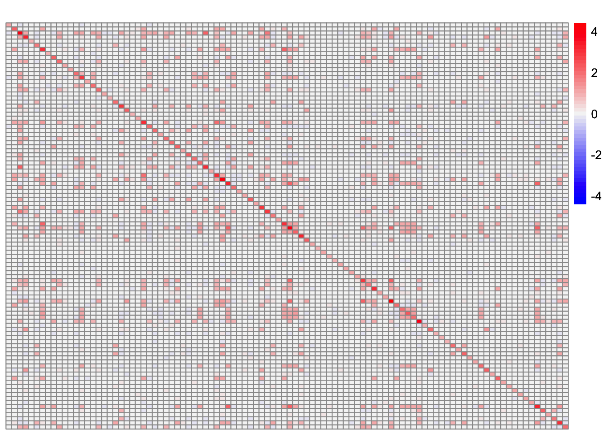
This is a scatter plot of the true loadings matrix:
pop_vec <- rep('A', n)
plot_loadings(sim_data$LL, pop_vec, legendYN = FALSE)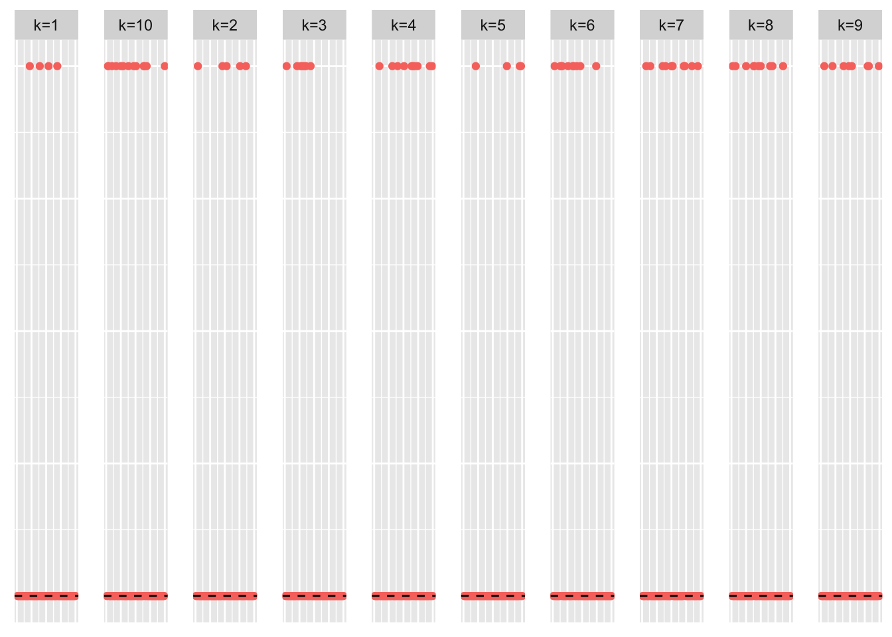
This is a heatmap of the true loadings matrix:
plot_heatmap(sim_data$LL)
symEBcovMF
symebcovmf_overlap_fit <- sym_ebcovmf_fit(S = sim_data$YYt, ebnm_fn = ebnm_point_exponential, K = 10, maxiter = 100, rank_one_tol = 10^(-8), tol = 10^(-8))[1] "Warning: scaling factor is zero"
[1] "Adding factor 8 does not improve the objective function"Progression of ELBO
symebcovmf_overlap_full_elbo_vec <- symebcovmf_overlap_fit$vec_elbo_full[!(symebcovmf_overlap_fit$vec_elbo_full %in% c(1:length(symebcovmf_overlap_fit$vec_elbo_K)))]
ggplot() + geom_line(data = NULL, aes(x = 1:length(symebcovmf_overlap_full_elbo_vec), y = symebcovmf_overlap_full_elbo_vec)) + xlab('Iter') + ylab('ELBO')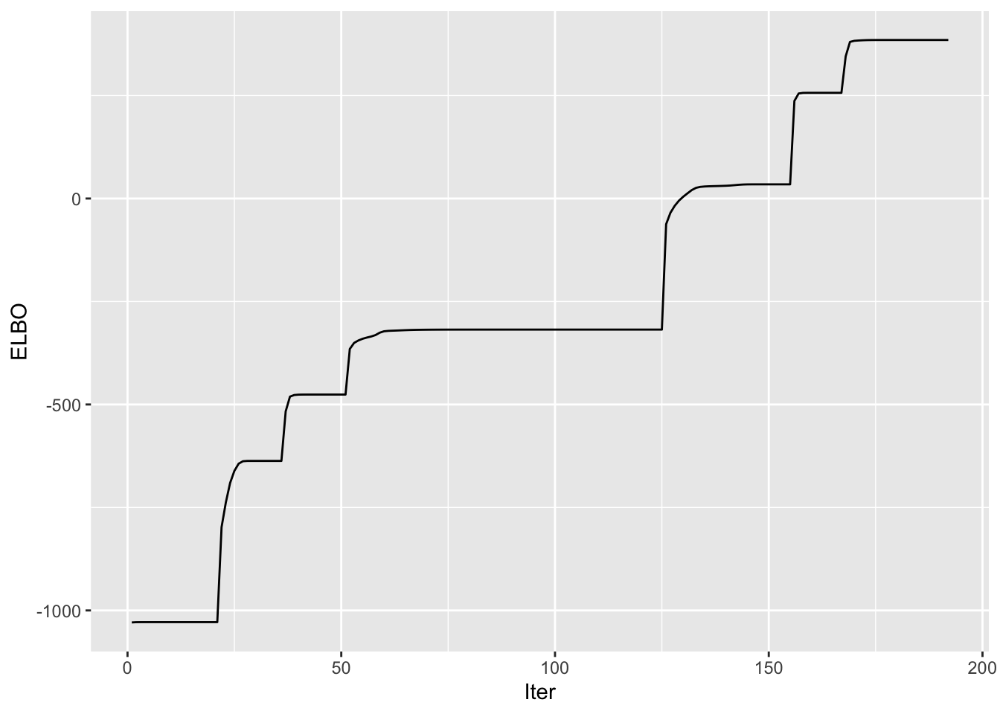
Visualization of Estimate
This is a scatter plot of \(\hat{L}\), the estimate from symEBcovMF:
plot_loadings(symebcovmf_overlap_fit$L_pm, pop_vec, legendYN = FALSE)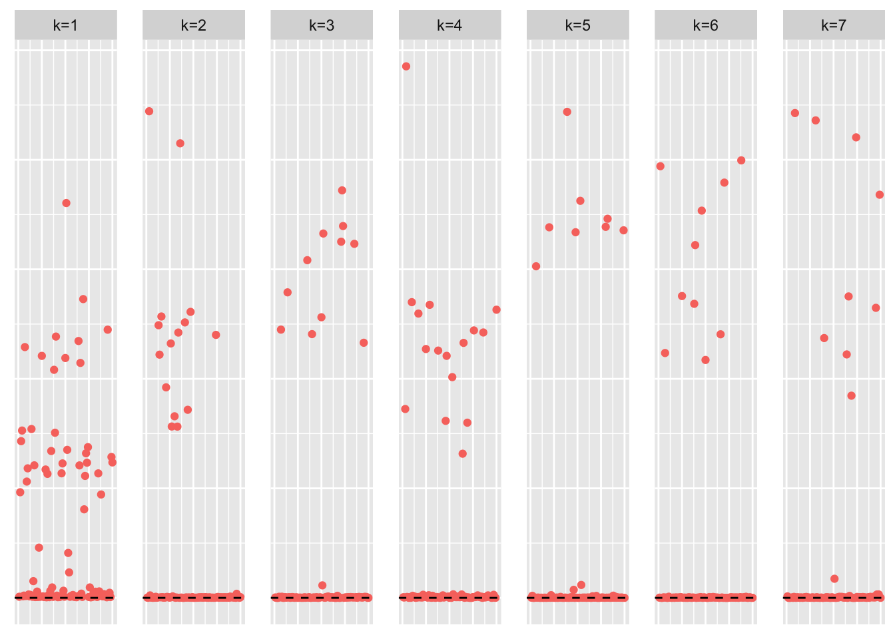
This is a heatmap of the true loadings matrix:
plot_heatmap(sim_data$LL)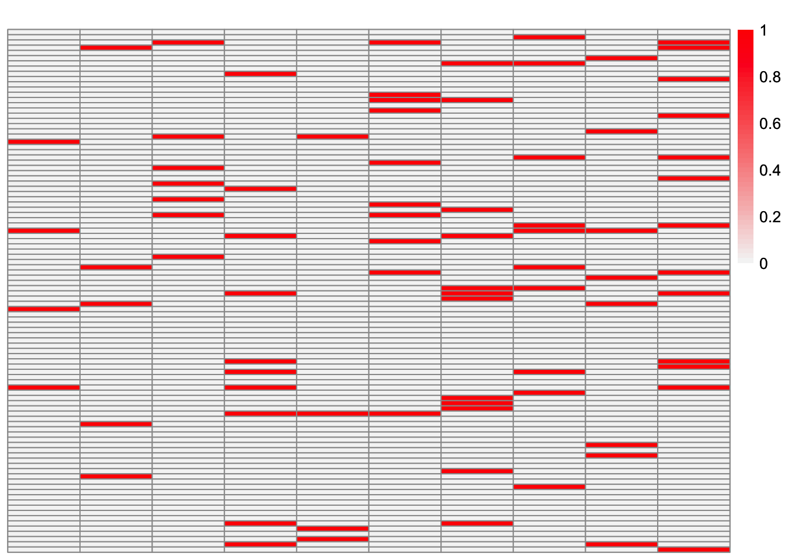
This is a heatmap of \(\hat{L}\). The columns have been permuted to match the true loadings matrix:
symebcovmf_overlap_fit_L_permuted <- permute_L(symebcovmf_overlap_fit$L_pm, sim_data$LL)
plot_heatmap(symebcovmf_overlap_fit_L_permuted, brks = seq(0, max(symebcovmf_overlap_fit_L_permuted), length.out = 50))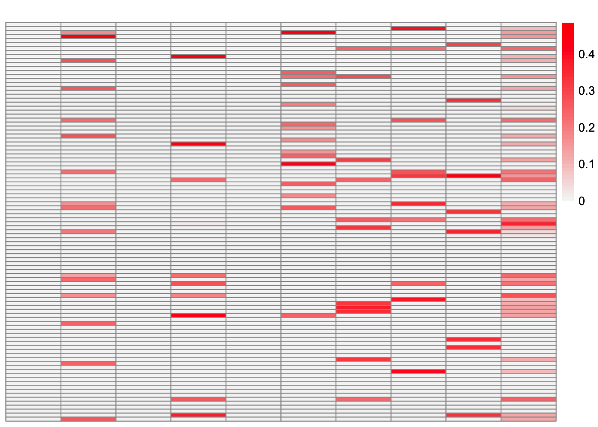
Note: some of the factors in this heatmap are just zero because the estimate had fewer factors than the true loadings matrix.
ggplot() + geom_point(data = NULL, aes(x = rowSums(sim_data$LL), y = symebcovmf_overlap_fit$lambda[1]*symebcovmf_overlap_fit$L_pm[,1])) + geom_abline(slope = 1, intercept = 1, color = 'red') + ylab('First loadings vector') + xlab('Number of groups each sample is part of')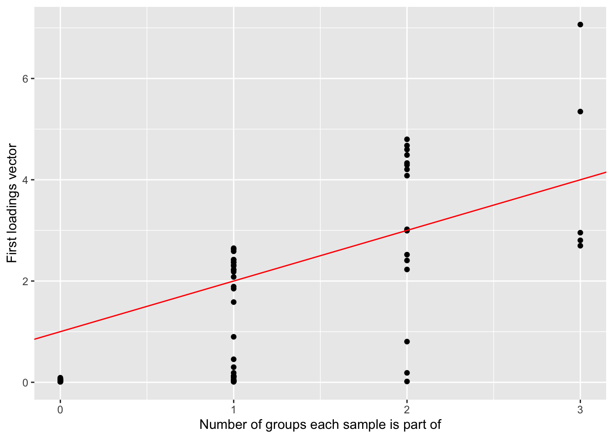
This is the objective function value attained:
symebcovmf_overlap_fit$elbo[1] 384.8354This is the crossproduct similarity of \(\hat{L}\):
compute_crossprod_similarity(symebcovmf_overlap_fit$L_pm, sim_data$LL)[1] 0.5977666Visualization of Fit
This is a heatmap of \(\hat{L}\hat{\Lambda}\hat{L}'\):
symebcovmf_overlap_fitted_vals <- tcrossprod(symebcovmf_overlap_fit$L_pm %*% diag(sqrt(symebcovmf_overlap_fit$lambda)))
plot_heatmap(symebcovmf_overlap_fitted_vals, brks = seq(0, max(symebcovmf_overlap_fitted_vals), length.out = 50))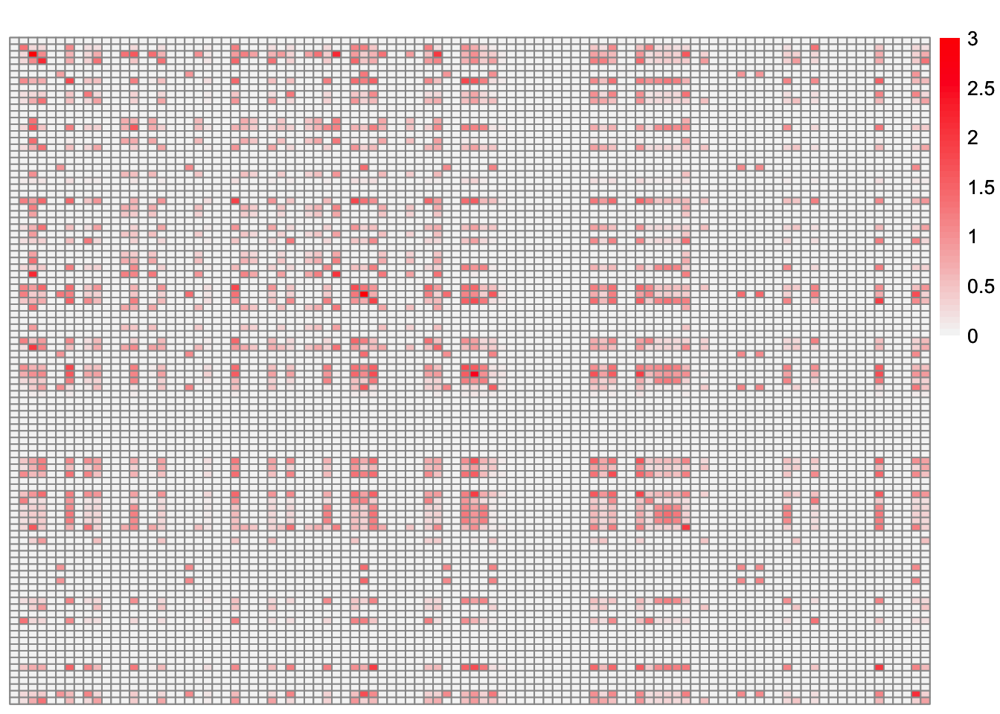
This is a scatter plot of fitted values vs. observed values for the off-diagonal entries:
diag_idx <- seq(1, prod(dim(sim_data$YYt)), length.out = ncol(sim_data$YYt))
off_diag_idx <- setdiff(c(1:prod(dim(sim_data$YYt))), diag_idx)
ggplot(data = NULL, aes(x = c(sim_data$YYt)[off_diag_idx], y = c(symebcovmf_overlap_fitted_vals)[off_diag_idx])) + geom_point() + ylim(-1, 3) + xlim(-1,3) + xlab('Observed Values') + ylab('Fitted Values') + geom_abline(slope = 1, intercept = 0, color = 'red')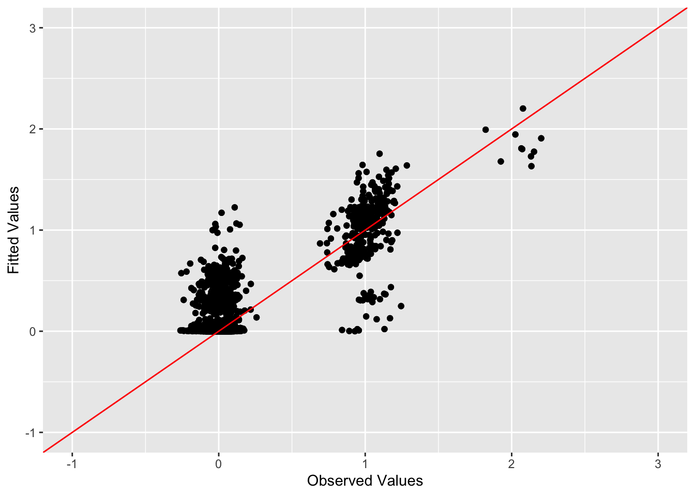
Observations
The symEBcovMF does not do a particularly good job in this setting. First, the method only uses seven factors instead of ten factors. As a result, the estimate will be penalized in the crossproduct similarity metric for using too few factors. The crossproduct similarity for the estimate is 0.598, which is comparable to how PCA performs in this setting. I also tried the method with the generalized binary prior, and it had a similar crossproduct similarity value.
symEBcovMF with refit step
symebcovmf_overlap_refit_fit <- sym_ebcovmf_fit(S = sim_data$YYt, ebnm_fn = ebnm_point_exponential, K = 10, maxiter = 100, rank_one_tol = 10^(-8), tol = 10^(-8), refit_lam = TRUE)Progression of ELBO
symebcovmf_overlap_refit_full_elbo_vec <- symebcovmf_overlap_refit_fit$vec_elbo_full[!(symebcovmf_overlap_refit_fit$vec_elbo_full %in% c(1:length(symebcovmf_overlap_refit_fit$vec_elbo_K)))]
ggplot() + geom_line(data = NULL, aes(x = 1:length(symebcovmf_overlap_refit_full_elbo_vec), y = symebcovmf_overlap_refit_full_elbo_vec)) + xlab('Iter') + ylab('ELBO')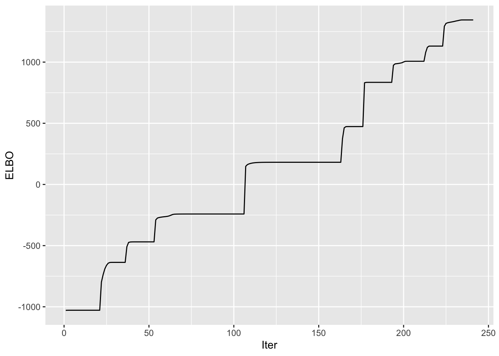 A note: I don’t think I save the ELBO value after the refitting step in vec_elbo_full. But the refitting does change this vector since it changes the residual matrix that is used when you add a new vector.
Visualization of Estimate
This is a scatter plot of \(\hat{L}_{refit}\), the estimate from symEBcovMF:
plot_loadings(symebcovmf_overlap_refit_fit$L_pm %*% diag(sqrt(symebcovmf_overlap_refit_fit$lambda)), pop_vec, legendYN = FALSE)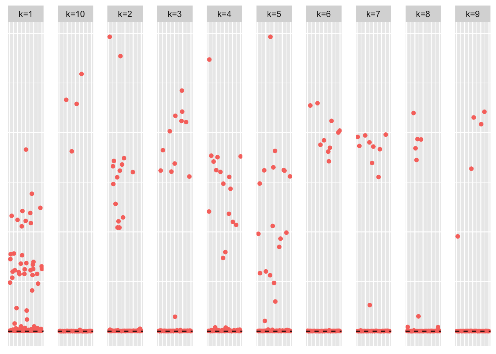
This is a heatmap of the true loadings matrix:
plot_heatmap(sim_data$LL)
This is a heatmap of \(\hat{L}_{refit}\). The columns have been permuted to match the true loadings matrix:
symebcovmf_overlap_refit_fit_L_permuted <- permute_L(symebcovmf_overlap_refit_fit$L_pm, sim_data$LL)
plot_heatmap(symebcovmf_overlap_refit_fit_L_permuted, brks = seq(0, max(symebcovmf_overlap_refit_fit_L_permuted), length.out = 50))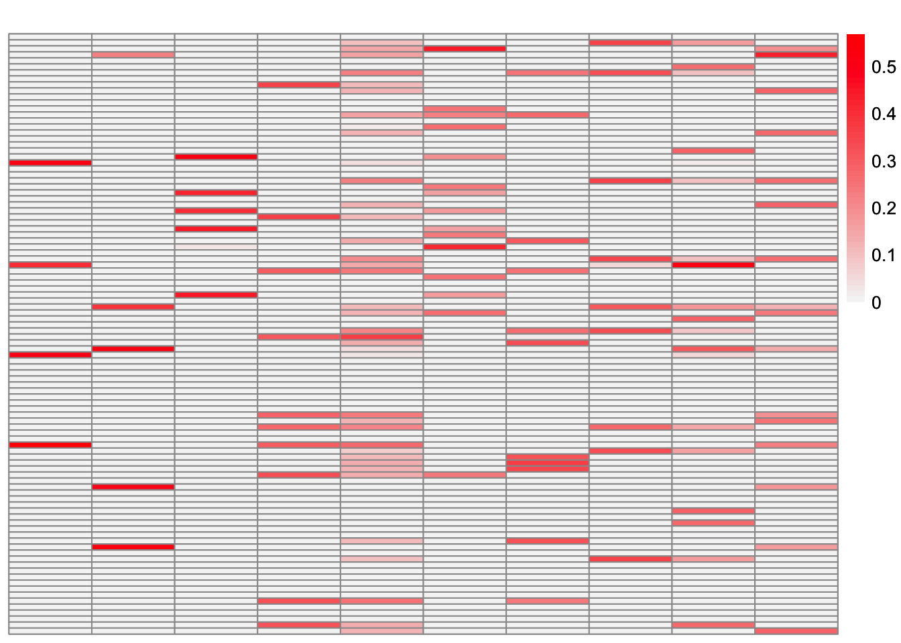
This is the objective function value attained:
symebcovmf_overlap_refit_fit$elbo[1] 1346.559This is the crossproduct similarity of \(\hat{L}_{refit}\):
compute_crossprod_similarity(symebcovmf_overlap_refit_fit$L_pm, sim_data$LL)[1] 0.8462501Visualization of Fit
This is a heatmap of \(\hat{L}_{refit}\hat{\Lambda}_{refit}\hat{L}_{refit}'\):
symebcovmf_overlap_refit_fitted_vals <- tcrossprod(symebcovmf_overlap_refit_fit$L_pm %*% diag(sqrt(symebcovmf_overlap_refit_fit$lambda)))
plot_heatmap(symebcovmf_overlap_refit_fitted_vals, brks = seq(0, max(symebcovmf_overlap_refit_fitted_vals), length.out = 50))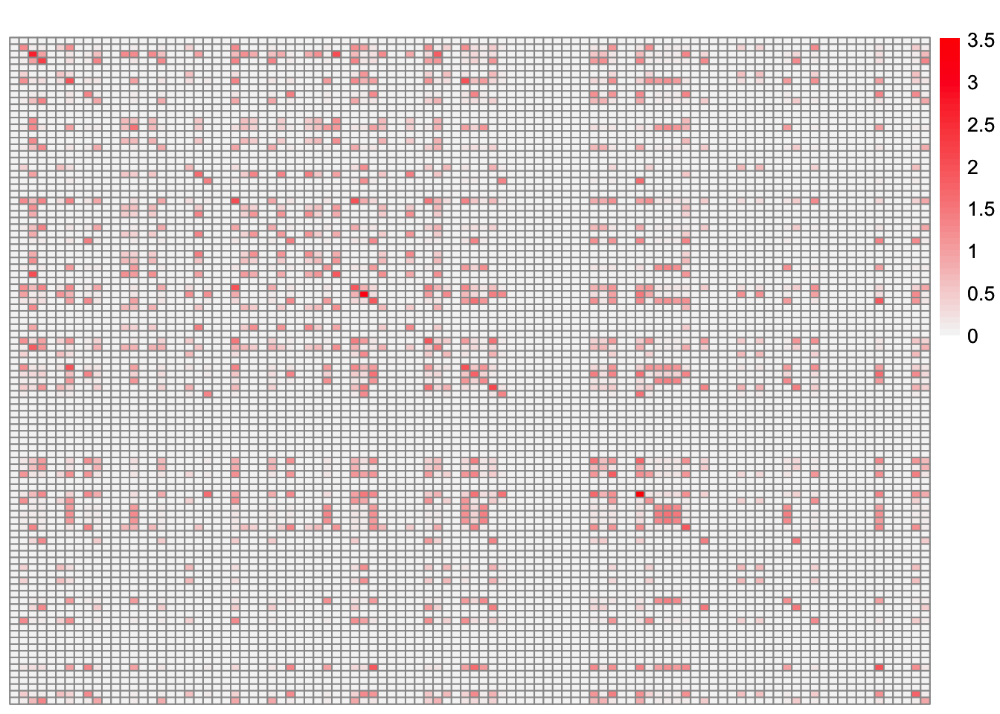
This is a scatter plot of fitted values vs. observed values for the off-diagonal entries:
diag_idx <- seq(1, prod(dim(sim_data$YYt)), length.out = ncol(sim_data$YYt))
off_diag_idx <- setdiff(c(1:prod(dim(sim_data$YYt))), diag_idx)
ggplot(data = NULL, aes(x = c(sim_data$YYt)[off_diag_idx], y = c(symebcovmf_overlap_refit_fitted_vals)[off_diag_idx])) + geom_point() + ylim(-1, 3) + xlim(-1,3) + xlab('Observed Values') + ylab('Fitted Values') + geom_abline(slope = 1, intercept = 0, color = 'red')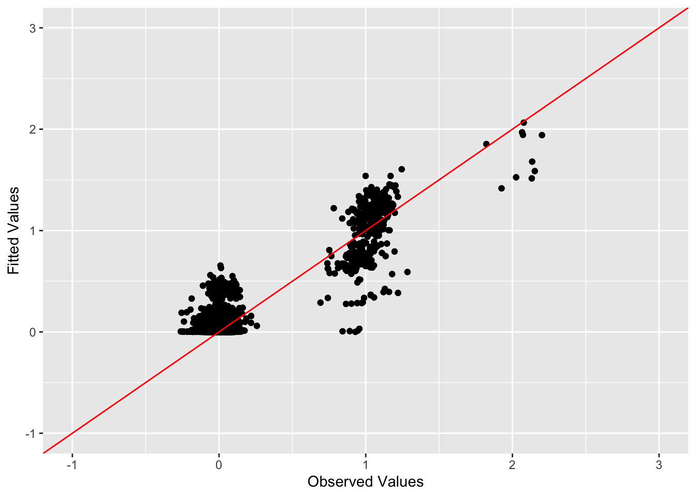
Observations
We see that symEBcovMF with the refitting step performs better. The method uses the allotted ten factors, and the estimate had a crossproduct similarity score of 0.846. I did also try the method with the generalized binary prior. The estimate was not as good as that from the point exponential prior, with a crossproduct similarity score of 0.789.
symEBcovMF with refit step with more factors
Since we include a refitting step after each factor is added, I’m curious to see if the method can correct itself when allowed to. Therefore, I set Kmax to 20. My intuition is that the method could course correct by reducing the weight on an old factor and then adding a new factor (that is hopefully closer to the true factor) with higher weight.
symebcovmf_overlap_refit_k20_fit <- sym_ebcovmf_fit(S = sim_data$YYt, ebnm_fn = ebnm_point_exponential, K = 20, maxiter = 100, rank_one_tol = 10^(-8), tol = 10^(-8), refit_lam = TRUE)[1] "elbo decreased by 0.138330234649629"
[1] "elbo decreased by 3.95630195271224e-11"
[1] "Warning: scaling factor is zero"
[1] "Adding factor 20 does not improve the objective function"Progression of ELBO
symebcovmf_overlap_refit_k20_full_elbo_vec <- symebcovmf_overlap_refit_k20_fit$vec_elbo_full[!(symebcovmf_overlap_refit_k20_fit$vec_elbo_full %in% c(1:length(symebcovmf_overlap_refit_k20_fit$vec_elbo_K)))]
ggplot() + geom_line(data = NULL, aes(x = 1:length(symebcovmf_overlap_refit_k20_full_elbo_vec), y = symebcovmf_overlap_refit_k20_full_elbo_vec)) + xlab('Iter') + ylab('ELBO')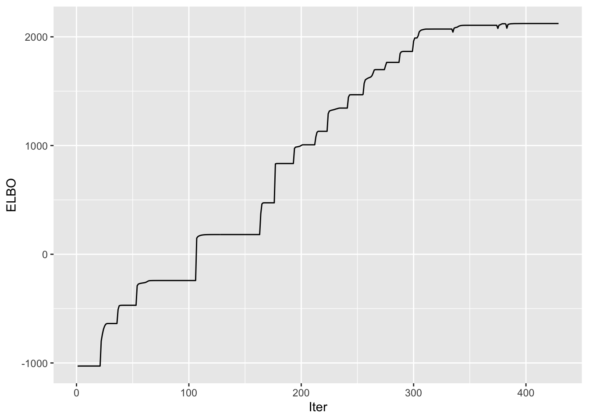 A note: I don’t think I save the ELBO value after the refitting step in vec_elbo_full. But the refitting does change this vector since it changes the residual matrix that is used when you add a new vector.
Visualization of Estimate
This is a scatter plot of \(\hat{L}_{refit-k20}\), the estimate from symEBcovMF:
plot_loadings(symebcovmf_overlap_refit_k20_fit$L_pm %*% diag(sqrt(symebcovmf_overlap_refit_k20_fit$lambda)), pop_vec, legendYN = FALSE)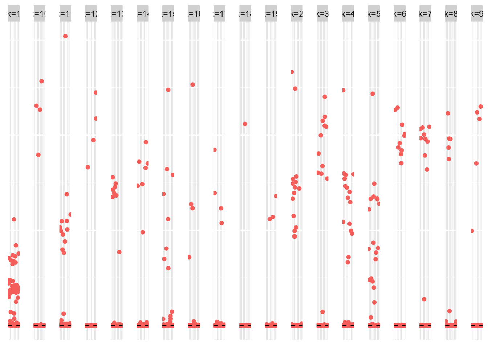
This is a heatmap of the true loadings matrix:
plot_heatmap(sim_data$LL)
This is a heatmap of \(\hat{L}_{refit-k20}\) where columns have been permuted to match the true loadings matrix:
symebcovmf_overlap_refit_k20_fit_L_permuted <- permute_L(symebcovmf_overlap_refit_k20_fit$L_pm, sim_data$LL)
plot_heatmap(symebcovmf_overlap_refit_k20_fit_L_permuted, brks = seq(0, max(symebcovmf_overlap_refit_k20_fit_L_permuted), length.out = 50))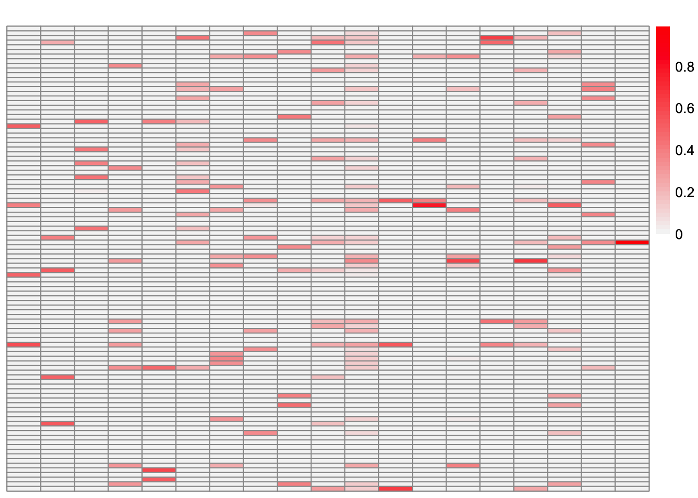 Note: the first 10 factors are the ones that match the columns of the true loadings matrix.
This is a heatmap of \(\hat{L}_{refit-k20}\). The columns are in the order in which they were added:
plot_heatmap(symebcovmf_overlap_refit_k20_fit$L_pm %*% diag(sqrt(symebcovmf_overlap_refit_k20_fit$lambda)), brks = seq(0, max(symebcovmf_overlap_refit_k20_fit$L_pm %*% diag(sqrt(symebcovmf_overlap_refit_k20_fit$lambda))), length.out = 50))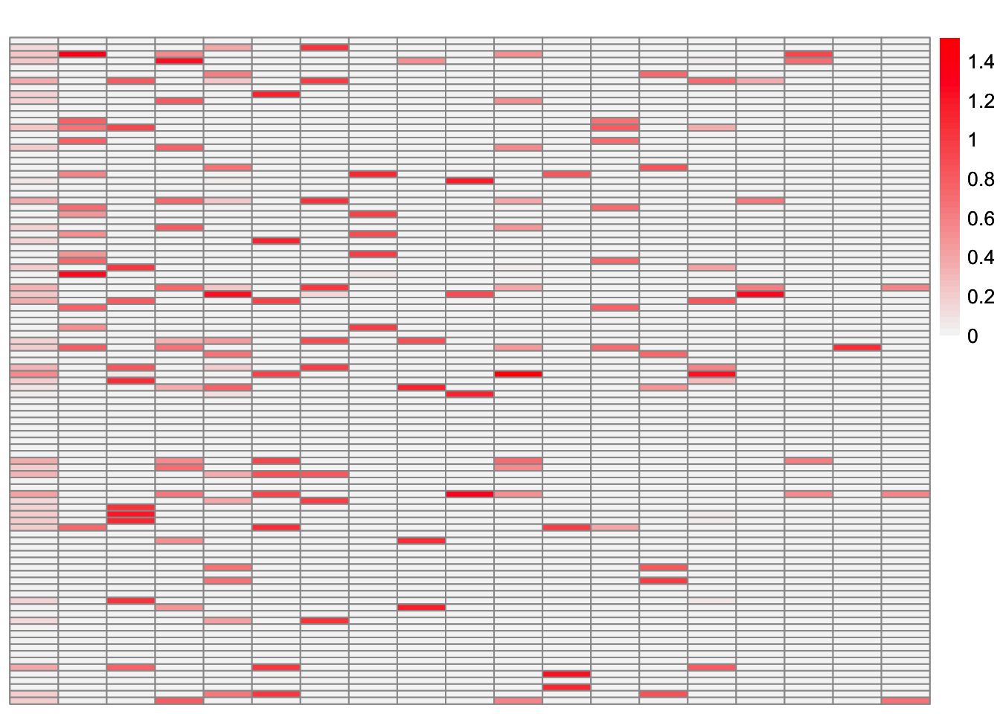
This is a heatmap of \(\hat{L}_{refit}\) from the previous section:
plot_heatmap(symebcovmf_overlap_refit_fit$L_pm %*% diag(sqrt(symebcovmf_overlap_refit_fit$lambda)), brks = seq(0, max(symebcovmf_overlap_refit_fit$L_pm %*% diag(sqrt(symebcovmf_overlap_refit_fit$lambda))), length.out = 50))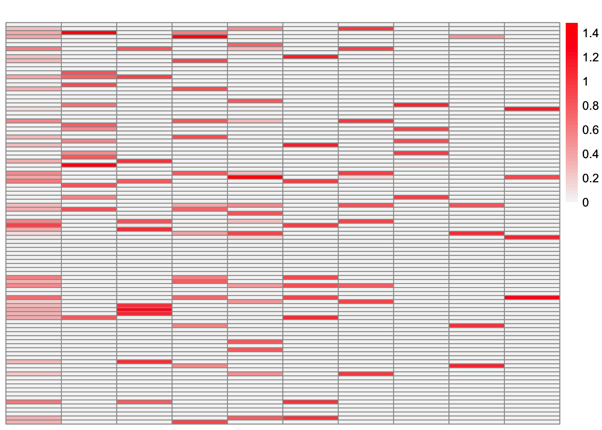
This is the objective function value attained:
symebcovmf_overlap_refit_k20_fit$elbo[1] 2123.433This is the crossproduct similarity of $_{refit-k20}:
compute_crossprod_similarity(symebcovmf_overlap_refit_k20_fit$L_pm, sim_data$LL)[1] 0.9425448Visualization of Fit
This is a heatmap of \(\hat{L}_{refit-k20}\hat{\Lambda}_{refit-k20}\hat{L}_{refit-k20}'\):
symebcovmf_overlap_refit_k20_fitted_vals <- tcrossprod(symebcovmf_overlap_refit_k20_fit$L_pm %*% diag(sqrt(symebcovmf_overlap_refit_k20_fit$lambda)))
plot_heatmap(symebcovmf_overlap_refit_k20_fitted_vals, brks = seq(0, max(symebcovmf_overlap_refit_k20_fitted_vals), length.out = 50))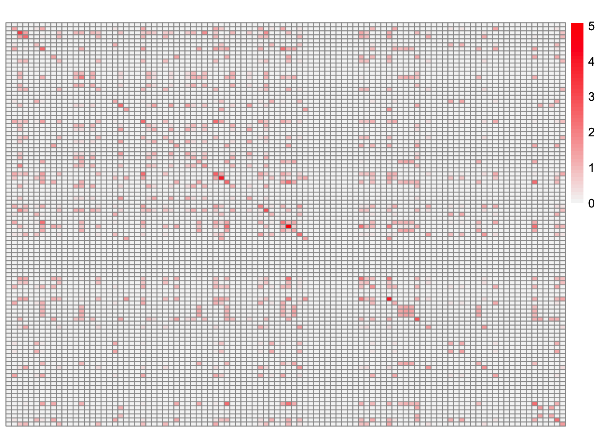
This is a scatter plot of fitted values vs. observed values for the off-diagonal entries:
diag_idx <- seq(1, prod(dim(sim_data$YYt)), length.out = ncol(sim_data$YYt))
off_diag_idx <- setdiff(c(1:prod(dim(sim_data$YYt))), diag_idx)
ggplot(data = NULL, aes(x = c(sim_data$YYt)[off_diag_idx], y = c(symebcovmf_overlap_refit_k20_fitted_vals)[off_diag_idx])) + geom_point() + ylim(-1, 3) + xlim(-1,3) + xlab('Observed Values') + ylab('Fitted Values') + geom_abline(slope = 1, intercept = 0, color = 'red')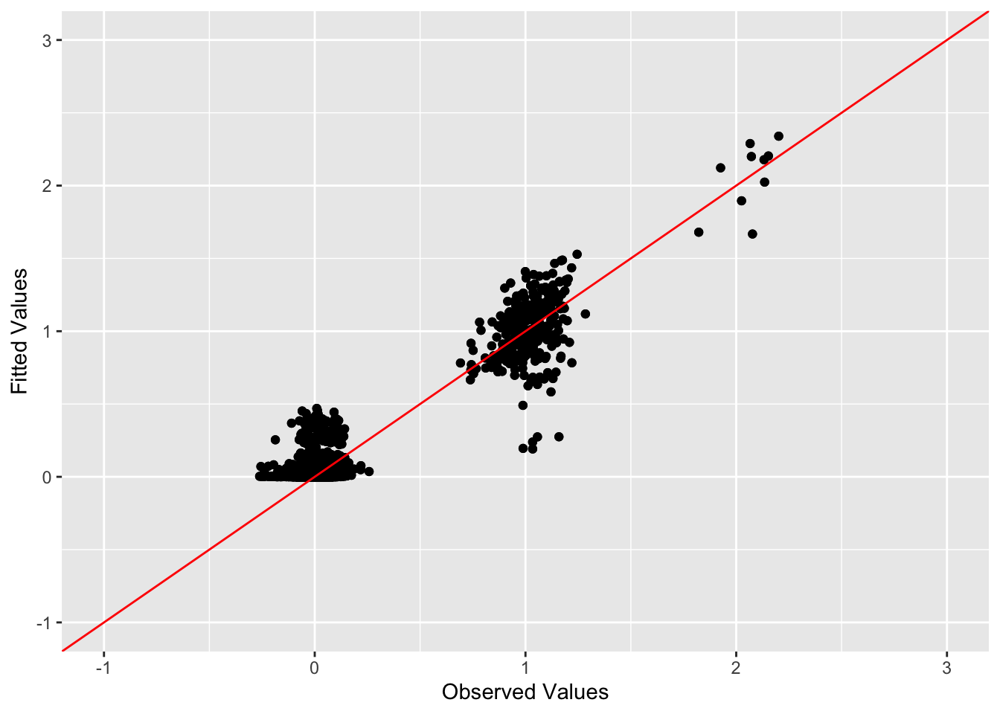
Observations
Letting Kmax be a larger value allowed the method to
find an estimate with a better crossproduct similarity score. This makes
sense as the estimate is allowed to add more factors and thus has more
chances to recover the true structure. Furthermore, the crossproduct
similarity score does not penalize a method for finding more factors.
The resulting estimate contains 19 factors. There are a couple of
explanations for the extra factors. The first is that the method is
finding spurious patterns. The second is the method is down-weighting
some of the old factors and adding new factors. In this example, it
seems like the original first factor was down-weighted. The extra factor
budget did allow the method to recover some additional factors that it
had not recovered when only allowed 10 factors. The last factors it adds
are very sparse, and look like subsets of existing factors. Perhaps
those factors are trying to fill in some of the gaps where the fitted
values don’t exactly match the observed values. In the previous fit,
there were a couple of values whose observed values corresponded to one
but the fitted values were zero. However, in this fit, we don’t have any
points where that is the case.
I also tried the generalized binary prior and saw similar behavior. The method with the generalized binary prior only added 13 factors. The crossproduct similarity score was a little higher at 0.961.
sessionInfo()R version 4.3.2 (2023-10-31)
Platform: aarch64-apple-darwin20 (64-bit)
Running under: macOS Sonoma 14.4.1
Matrix products: default
BLAS: /Library/Frameworks/R.framework/Versions/4.3-arm64/Resources/lib/libRblas.0.dylib
LAPACK: /Library/Frameworks/R.framework/Versions/4.3-arm64/Resources/lib/libRlapack.dylib; LAPACK version 3.11.0
locale:
[1] en_US.UTF-8/en_US.UTF-8/en_US.UTF-8/C/en_US.UTF-8/en_US.UTF-8
time zone: America/Chicago
tzcode source: internal
attached base packages:
[1] stats graphics grDevices utils datasets methods base
other attached packages:
[1] lpSolve_5.6.20 ggplot2_3.5.1 pheatmap_1.0.12 ebnm_1.1-34
[5] workflowr_1.7.1
loaded via a namespace (and not attached):
[1] gtable_0.3.5 xfun_0.48 bslib_0.8.0 processx_3.8.4
[5] lattice_0.22-6 callr_3.7.6 vctrs_0.6.5 tools_4.3.2
[9] ps_1.7.7 generics_0.1.3 tibble_3.2.1 fansi_1.0.6
[13] highr_0.11 pkgconfig_2.0.3 Matrix_1.6-5 SQUAREM_2021.1
[17] RColorBrewer_1.1-3 lifecycle_1.0.4 truncnorm_1.0-9 farver_2.1.2
[21] compiler_4.3.2 stringr_1.5.1 git2r_0.33.0 munsell_0.5.1
[25] getPass_0.2-4 httpuv_1.6.15 htmltools_0.5.8.1 sass_0.4.9
[29] yaml_2.3.10 later_1.3.2 pillar_1.9.0 jquerylib_0.1.4
[33] whisker_0.4.1 cachem_1.1.0 trust_0.1-8 RSpectra_0.16-2
[37] tidyselect_1.2.1 digest_0.6.37 stringi_1.8.4 dplyr_1.1.4
[41] ashr_2.2-66 labeling_0.4.3 splines_4.3.2 rprojroot_2.0.4
[45] fastmap_1.2.0 grid_4.3.2 colorspace_2.1-1 cli_3.6.3
[49] invgamma_1.1 magrittr_2.0.3 utf8_1.2.4 withr_3.0.1
[53] scales_1.3.0 promises_1.3.0 horseshoe_0.2.0 rmarkdown_2.28
[57] httr_1.4.7 deconvolveR_1.2-1 evaluate_1.0.0 knitr_1.48
[61] irlba_2.3.5.1 rlang_1.1.4 Rcpp_1.0.13 mixsqp_0.3-54
[65] glue_1.8.0 rstudioapi_0.16.0 jsonlite_1.8.9 R6_2.5.1
[69] fs_1.6.4